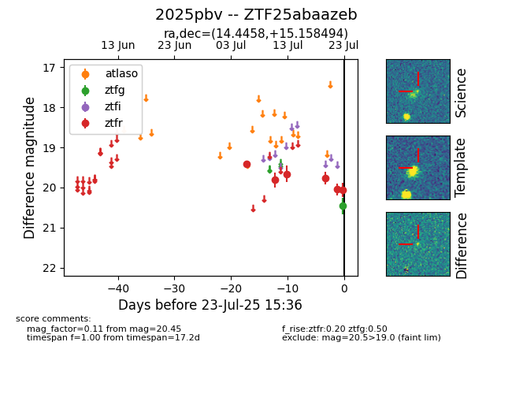

Target ZTF25abaazeb at 2025-07-23 15:36, see:
FINK: fink-portal.org/ZTF25abaazeb
Lasair: lasair-ztf.lsst.ac.uk/objects/ZTF25abaazeb
ALeRCE: alerce.online/object/ZTF25abaazeb
TNS: wis-tns.org/object/2025pbv
YSE: ziggy.ucolick.org/yse/transient_detail/2025pbv
alt names
ZTF25abaazeb (ztf,fink)
2025pbv (tns,yse)
coordinates:
equatorial (ra, dec) = (14.4458,+15.15849)
galactic (l, b) = (125.2067,-47.68523)
photometry
last atlaso=nan, ztfg=20.45, ztfr=20.06
1 atlaso, 1 ztfg, 6 ztfr detections
